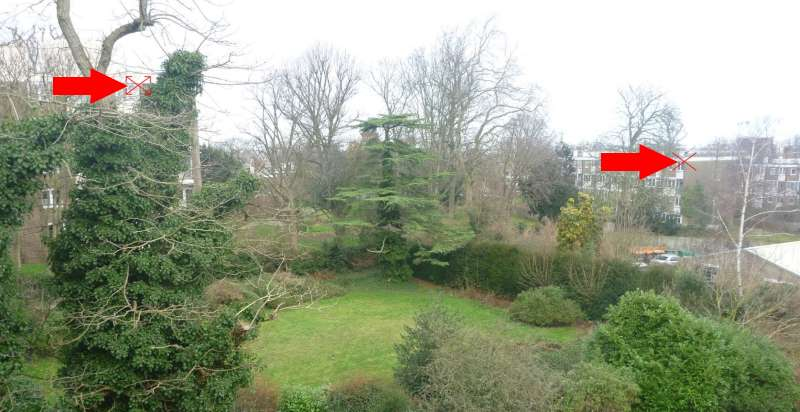
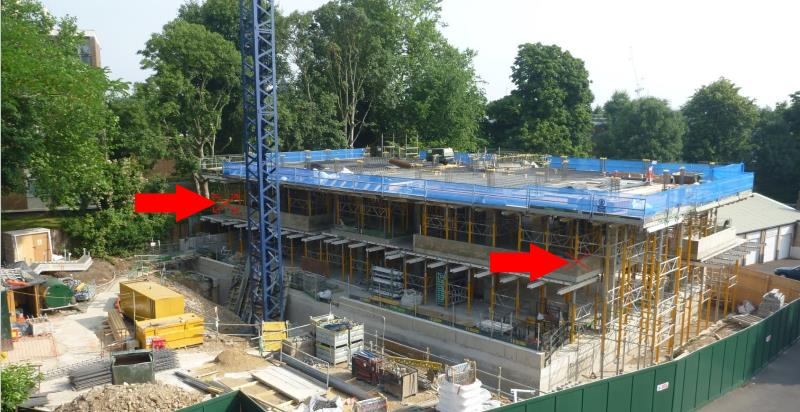
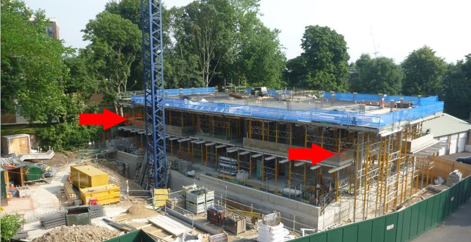

Sometimes it is not possible to identify two alignment points that are visible in all a project’s images. Typically, this is when the scene changes significantly. Such an example is the Flats project. The initial photo is of a garden, then there is a sequence of photos of ground clearing and, finally, a sequence of the building’s construction.
These are four images from the Flats Construction project.

As you will see, it is very difficult to identify two alignment points that are locatable in the four images. In such a situation, different approaches might be taken:
The following describes the last option.
Examine the set of images that make up the project and split them into sub-sets of images, with each sub-set containing images where the same alignment points can be identified. One further constraint when forming these sub-sets is that the last image of a sub-set must be the same image as the first image of the following sub-set. This means that it must be possible to identify the alignment points used in both sub-sets in the first/last image.
Each sub-set is handled by Zoetic as a (regular) project. The Flats Construction project was split into three projects covering (1) original garden; (2) ground clearing; (3) construction of the flats. The alignment points used by the three projects were:
 

The first and last images of each of the three sub-projects making up the Flats Construction project. Note that the last image is the same as the following sub-project's first image, and that the alignment points presented above are identifiable in the corresponding last and first images.
|
|
|
| Project1 - first image. Alignment points - windows corners | Project1 - last image. Alignment points - windows corners |
|
|
|
| Project2 - first image. Alignment points - points on fence | Project2 - last image. Alignment points - points on fence |
|
|
|
| Project3 - first image. Alignment points - points on 1st floor | Project3 - last image. Alignment points - points on 1st floor |
To render the three projects to a single video, Zoetic must treat each of the three projects as sub-projects. To identify a project as a sub-project, the project names must follow a numerical sequence e.g. flat1, flat2, flat3; and Zoetic's Process Sub-projects function must be enabled within Settings. Then, when the first project is loaded (flat1 in this example), Zoetic will process the additional sub-projects as being part of the explicitly loaded project (flat1).
It should be noted: